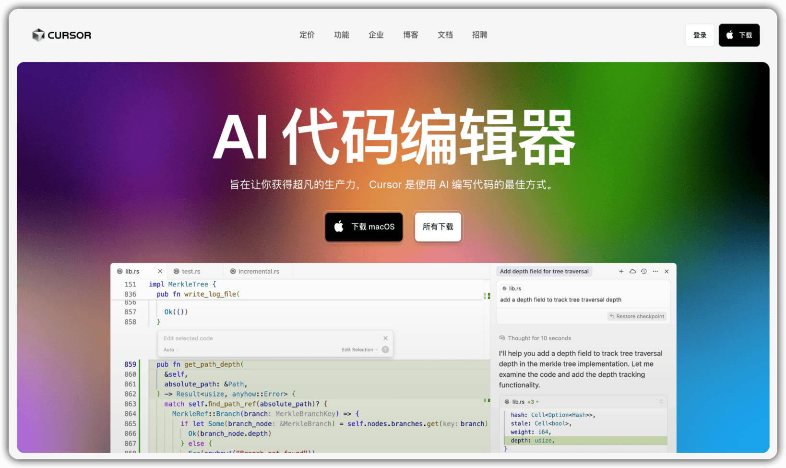
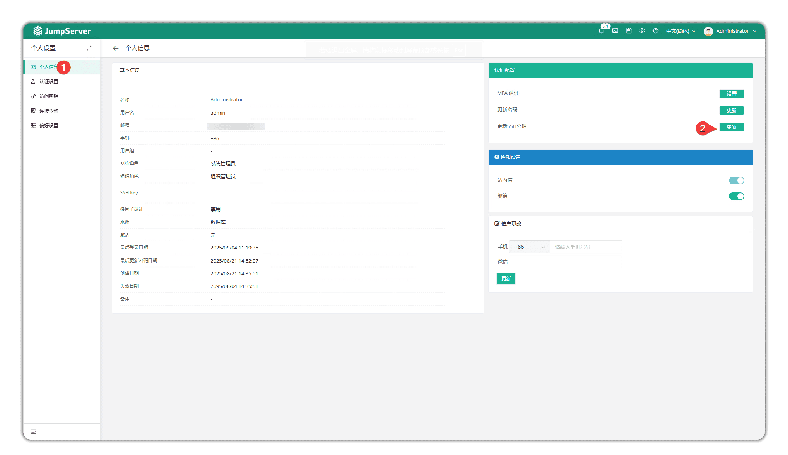
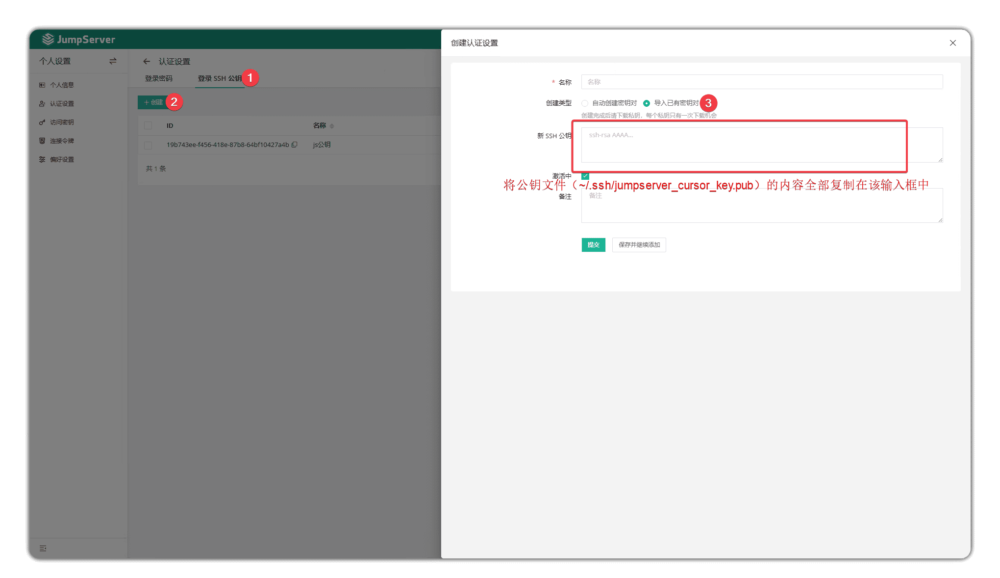
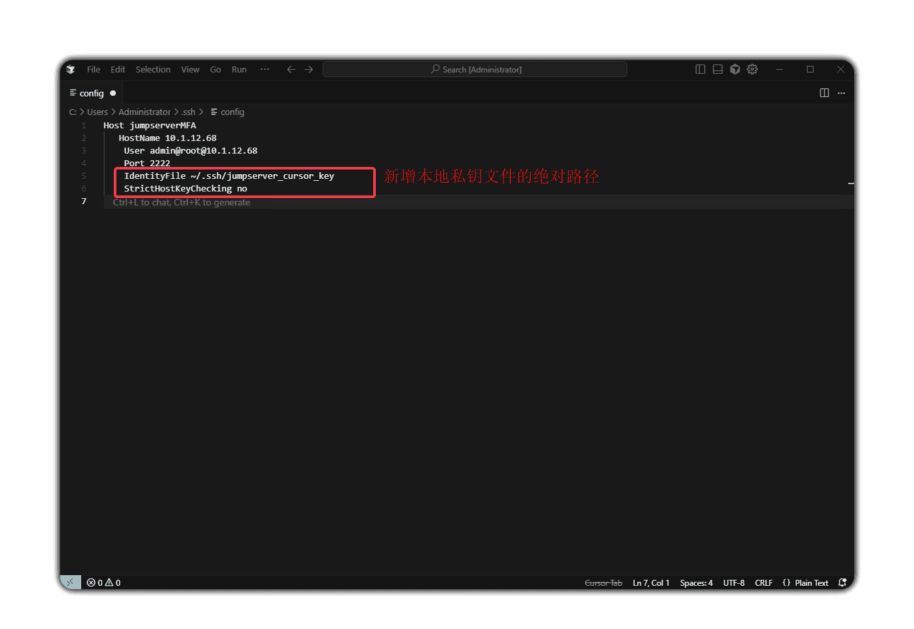

Cursor是一款基于外部大语言模型的AI编程助手。它在VS Code的基础上集成了AI技术能力，支持MacOS X、Windows和Linux操作系统。Cursor能够为用户提供代码补全、解析、重构和基于自然语言描述的完整函数生成功能，辅助开发者提升软件开发过程中的生产力表现。
Cursor工具所提供的Remote-SSH插件能够直连JumpServer开源堡垒机所纳管的Linux-SSH协议资产，帮助开发人员实现远程开发。本文主要为您介绍通过Cursor工具连接JumpServer资产的具体配置方法。
一、Cursor概述
Cursor是由Anysphere公司开发的AI编程助手，于2023年发布。与其他的AI编程助手相比，Cursor的主要特点是：
■ 语法高亮、智能补全；
■ 快捷键自定义、括号匹配、代码片段；
■ 代码对比Diff、GIT命令；
■ 插件扩展功能；
■ 强化AI代码生成、错误修复、逻辑优化；
■ 适合Web应用、后端服务及脚本开发。
在Cursor官网（https://cursor.com/cn）下载安装即可。

安装时的注意事项：
- 连接时，需在服务器安装客户端（“.cursor-server”），默认安装于登录用户目录（如root用户则在/root）；
- 服务器可连外网时，Cursor自动下载并安装客户端；
- 服务器无法连外网时，需手动下载或复制已安装的“.cursor-server”目录到目标服务器；
- 复制目录时，需确保权限和所属用户与登录用户一致，否则连接失败。建议打包（如tar）后复制，解压可避免权限问题。二、通过Cursor连接JumpServer的配置方法
■ JumpServer配置步骤
通过Cursor的Remote-SSH插件直连JumpServer所纳管的Linux-SSH协议资产，首先需要在JumpServer的配置文件（config.txt）中修改以下参数：
ENABLE_LOCAL_PORT_FORWARD=true
ENABLE_VSCODE_SUPPORT=true注意：修改完配置文件后，需要重启JumpServer堡垒机让配置文件生效。
■ Cursor配置步骤
1. 安装好Cursor后，下载Remote-SSH插件（注意： 目前Remote-SSH最新的v1.0.26版本存在问题，会导致安装连接服务失败。这里我们使用Remote-SSH v1.0.0版本插件进行连接）。
具体步骤：在Cursor应用商店的“扩展”选项中搜索“Remote-SSH”，安装该插件，如下图所示：

2. 点击左下角绿色标识，选择“Connect to Host...”选项。
3. 点击“Add new SSH Host”选项，自动跳转至配置文件编辑页面，配置内容如下图所示：
Host jumpserverMFA(名称自定义，建议只用字母、数字和下划线，避免特殊字符和空格，确保唯一且简洁)
- HostName jumpserverHostIP
- User jumpserverUsername@AssetAccount@AssetIP
- Port 2222
解释：
- jumpserverUsername：登录 JumpServer 的用户
- AssetAccount：连接资产指定的资产账号
- AssetIP：指定要连接的资产
- jumpserverHostIP：JumpServer 服务 IP
- 2222：KOKO 端口
注：
AssetAccount 是该资产所有授权中，唯一的登录用户名，只匹配一条
AssetIP 是所有资产授权中，唯一匹配到 IP，只匹配一条4. 选择需要连接的资产，输入JumpServer的登录密码；
5. 如果JumpServer开启了MFA验证， 则会在输入密码后弹出MFA验证码OTP Code的提示框；
6. 资产连接成功后，界面左下角会显示目标主机，打开终端即可对资产进行操作。
三、免密登录配置
要实现JumpServer的免密登录，核心是将JumpServer用户的认证方式从“密码”更改为“SSH公钥认证”。具体配置方法如下：
1. 本地生成密钥对
如果还没有密钥对，请在本地机器（运行Cursor的电脑）的终端或PowerShell中执行以下命令：
ssh-keygen -t rsa -b 4096 -C "your_email@example.com" -f ~/.ssh/jumpserver_cursor_key-t rsa: 指定密钥类型为RSA；
-b 4096: 指定密钥长度为4096位（更安全）；
-C: 添加一个注释，通常用于邮箱或标识；
-f: 指定密钥文件的保存路径和文件名。这里的示例为“~/.ssh/jumpserver_cursor_key”（私钥）和 “jumpserver_cursor_key.pub”（公钥）。
注意：如果想为私钥设置密码，则每次使用密钥时仍需输入该密码，无法实现完全免密。因此，为了实现完全免密，请不要设置密码，全程回车即可。
2. 将公钥添加到JumpServer用户账号
点击JumpServer操作界面右上角的用户名，进入“个人信息”页面。在右侧的认证配置栏中，点击“更新SSH公钥”按钮，然后在“登录SSH公钥”标签页中点击“创建”按钮，将公钥文件的全部内容复制粘贴到“新SSH公钥”输入框中。

3. 修改Cursor（Remote-SSH）的SSH配置文件
Host jumpserverMFA # 自定义的主机别名
HostName jumpserverHostIP # JumpServer 服务器的 IP 地址或域名
User jumpserverUsername@AssetAccount@AssetIP # 连接格式：JumpServer用户@资产账号@资产IP
Port 2222 # JumpServer Koko 组件的端口，默认为 2222
IdentityFile ~/.ssh/jumpserver_cursor_key # 新增：指向本地私钥文件的绝对路径
# PreferredAuthentications publickey # （可选）强制使用公钥认证，如果配置有问题可注释掉
StrictHostKeyChecking no # （可选）避免因跳板机主机密钥变化而连接失败
UserKnownHostsFile /dev/null # （可选）不严格检查 JumpServer 的主机密钥关键参数说明：
IdentityFile: 此项为核心新增项，指向生成的私钥文件的路径；
PreferredAuthentications: 如果取消注释，会指示SSH客户端优先甚至只使用公钥认证，有助于排除密码认证的干扰。

4. 连接测试
完成以上配置后，再次在Cursor中选择“Connect to Host... ”选项，配置“Host Jumpserver MFA”。
如果配置成功，Cursor将自动使用私钥进行认证，不再提示需要输入JumpServer的用户密码，直接显示连接成功或仅提示“请输入MFA 验证码（若已启用）”信息；
如果连接失败，请检查Cursor的输出终端或系统的SSH日志（如使用“ssh-v jumpserverMFA”命令调试），常见问题是公钥未正确复制或私钥路径错误。
5. 重要补充说明：关于MFA (OTP)
如果JumpServer用户启用了MFA（多因素认证），即使配置了SSH密钥，通常仍然需要手动输入一次性的动态验证码。SSH协议本身没有标准机制能自动处理动态令牌。出于安全性设计，MFA验证是为了防止完全自动化的登录。
因此，通过Cursor“一键连接”JumpServer资产的功能仅适用于未启用MFA的JumpServer用户账号。如果需要兼顾安全性与便利性，可以考虑仅在特定环境（例如测试开发环境）的账号上禁用MFA，但需评估具体安全风险。
四、总结
总得来说，通过Cursor工具连接JumpServer资产的优势体现在以下方面：
首先是丰富的插件生态，Cursor兼容VS Code的多数插件，无论是编辑HTML、CSS、JavaScript、TypeScript、Vue、React等前端代码，还是Java、Python、Go等后端代码，都能找到适配的功能插件，满足不同开发场景的需求；其次是远程编辑体验更优，相较于Xshell、PuTTY等通过SSH命令行连接服务器的工具，Cursor可以直连JumpServer资产，并且可以直接在编辑器内打开或者修改服务器上的文件，无需在本地与服务器间反复传输文件；最后，是功能集成的高效性。除文件编辑外，Cursor内置终端功能，可以直接在编辑器内执行服务器命令（例如部署脚本、查看日志等），无需切换多个工具，有效简化了开发流程。
与其他的AI编程助手比较，Cursor的缺点也比较明显。首先是操作无法审计，通过Cursor方式直连JumpServer的Linux-SSH资产时，所有操作（例如文件修改、命令执行等）不会在JumpServer中留下操作内容记录与操作录像，无法实现操作审计；另外是Cursor仅保留基础日志，JumpServer仅保留基础的登录日志（例如“某用户登录了某资产”），无后续操作追溯依据。